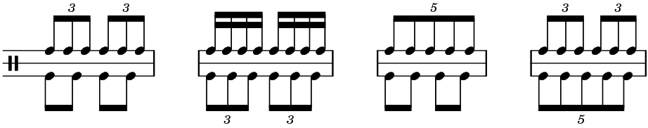

All of these tunings are whole number ratios which can actually be found in the harmonic series as you can see below. However, the series written on the musical staff is only an approximation of pitches – they do not correspond exactly to the note they are meant to represent. Notes on a musical staff typically assume an equal temperament tuning system – this system is ubitiquitous throughout Western Art music and pop music. Equal temperament is divided into 12 equal frequency ratios per octave. It's a little easier to think of this using an equation: 440*2(hs/12) where hs = number of half steps and 440 refers to A440 (in Hz). So 440*2(-9/12) would give you the frequency in Hz for middle C. Compare that to just intonation, where we can see an interval of a major 3rd is a 5:4 ratio according to the harmonic series notated below. However, a major 3rd in equal temperament tuning is always a ratio of 21/3:1. This is quite a noticeable difference in pitch and probably one of the easier intervals to detect by the untrained ear.
Now let's think about these ratios as rhythms instead of pitches. If we use the just intonation ratios, we can fit these into nice rhythms on the staff. Below are a few musical examples – 3:2, 4:3, 5:4, and 6:5 respectively. You can listen to these ratios as rhythms in the interactive.
What's interesting is that all of these rhythms are integer ratios, which is not what equal temperament ratios are. What if we wanted to think of rhythm in equal temperament ratios just like the Western 12-note scale? Well, unfortunately those ratios would be nearly impossible to perform or even conceptualize from a composer's point of view. Time affects our ability to perceive rhythms – a very slow 5:4 polyrhythm will be difficult to detect because our memory of past events becomes obfuscated. We can perceive pitches much easier because of their extremely short cycles, thus seeming to occur instantaneously. However, some composers have used fractional rhythms and nested polyrhythms as a way of creating complex layers of rhythmic counterpoint. Brian Ferneyhough and Stuart Saunders Smith might come to mind when discussing these intricate ways of using rhythm. Below, you can interact with the app to hear the polyrhythms from the excerpts. If you've made it this far, I suspect you may be expecting a full-blown polyrhythm sequencer at some point. Well, you're right, but I haven't made one just yet. I'll probably (maybe) make one for a later interactive so you'll have to stay tuned.